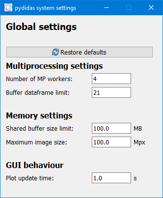

The Global settings window
The Global settings window allows the user to set system Parameters which control multiprocessing, memory management and performance.
Using the Restore defaults button will change all settings back to
their default values.
Settings
Parameter |
Description |
|---|---|
Number of MP workers |
The number of parallel processes which perform the calculations. Due to the inherent parallelization of integration in pyFAI and due to disk read access interference for too many processes, the number should not be set too high. However, depending on system resources and the type of workflow, a larger number of workers might speed up certain processing tasks. |
Buffer dataframe limit |
This Parameter determines the size of the buffer. The buffer will be created to hold the specified number of data frames, irrespective of their size, as long as the size is within the accepted memory management size. The buffer must be able to hold at least one dataframe per multiprocessing worker. |
Shared buffer size limit |
The maximum size of the memory buffer in MB. This setting is used to enforce that pydidas does not create buffers which interfere with the operating system. |
Maximum image size |
An enforced maximum image size in megapixel to limit the RAM usage. |
Plot update time |
The time delay between any plot updates in the pydidas GUI (in seconds). |